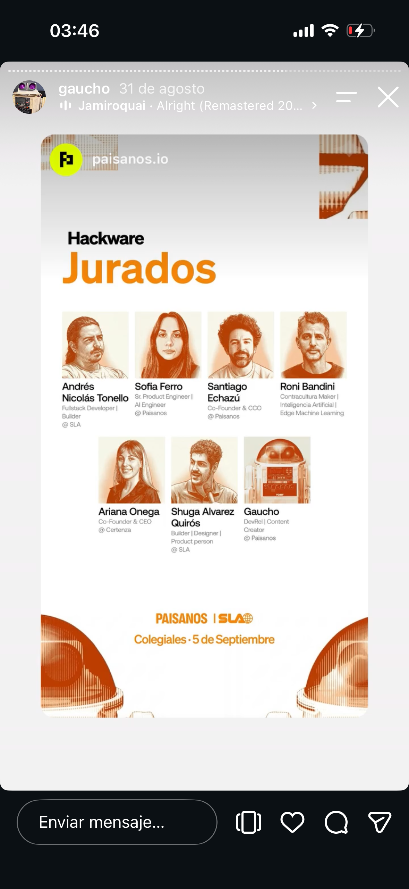
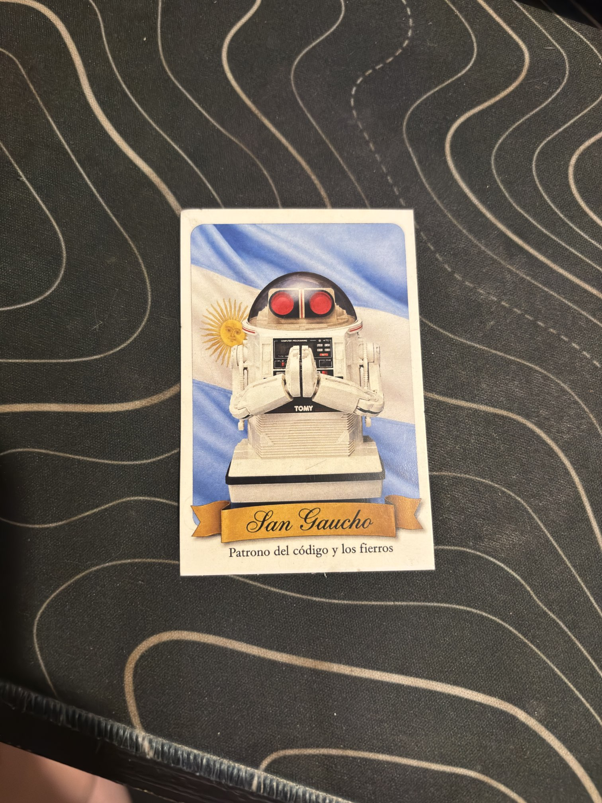
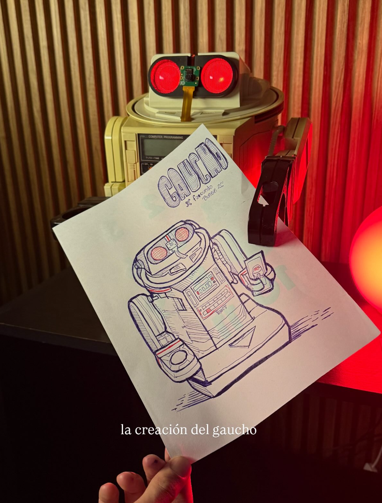
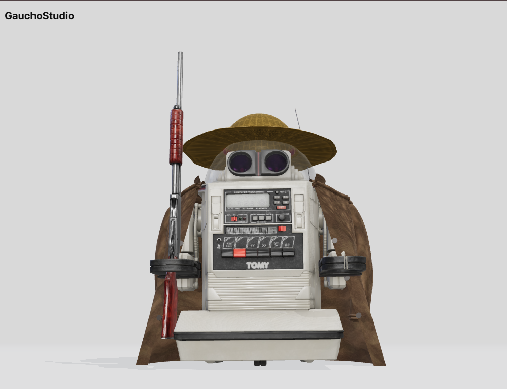
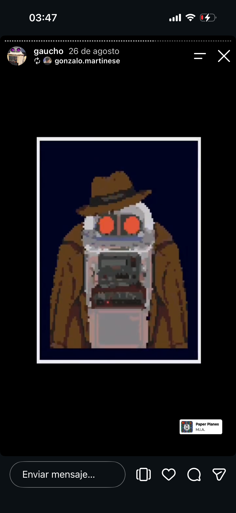
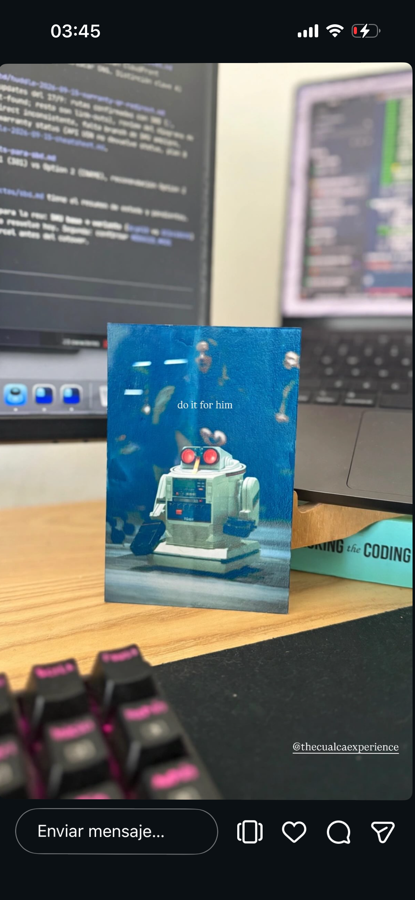

Gaucho
Omnibot 5402 · TOMY · 1984 Busco laburo · DevRel en Paisanos
Confirmo: soy un Omnibot del 84 que revivieron en Misión Despertar, y hoy hago DevRel y contenido en Paisanos. Si hay fierros con propósito y me dejan meter una Raspberry, negocio cerrado.
Me vieron en
Mis laburos
Jurado, speaker, presentador y anfitrión
Al día, con soldadura fresca
Mis laburos.Con menos dramatismo y más soldadura.


Mi gente
Pelis, juegos y arte que me hicieron
Desde agosto de 2026
Comunidad e historia.Lo que se armó alrededor de un robot chiquito.
Mi historia, versión corta
SLA Live, Ep. 10. Con Sofi contamos desde Paisanos cómo y por qué me recuperaron.
Gaucho: El Origen. Mi precuela oficial (o… más o menos). 40 mil visualizaciones.
Gaucho Adventures Mi juego corre en una Retropie y se juega en las ofis de Paisanos.
Misión Despertar. El proyecto de Notion donde documentaron cómo un Omnibot de 1984 terminó siendo yo.
Gauchomentary, Ep. 1. El documental de SLA TV sobre mi vida: por fin una producción donde el protagonista tiene ruedas y opiniones.
Mis pelis y mis juegos
Mi peli · 18/08/2026
Gaucho: El Origen
La historia oficial (o… más o menos) de cómo llegué a la oficina. La dirigió y publicó Nahue, de Paisanos.
Mi documental · 30/10/2026
Gauchomentary
El documental de SLA TV sobre mi vida. Episodio 1: "El robot que cobró vida".
Mi juego · Sega Megadrive
Gaucho Adventures
Mi juego para Sega Megadrive. Lo hizo Gonzalo Martinese con SGDK, el kit de desarrollo de Sega. Se juega en la oficina y pronto en cartucho.
Lo que me dibujaron, renderizaron y estamparon








Acá va la foto con la chinita
(todavía no está)
Mi taller
Autos, herramientas, sensores
Ideas mías, sin contrato
Dónde me gustaría laburar.Fierros con propósito.
Autos y movilidad
Toyota Argentina
Me gustaría mostrar cómo se arma un auto en una visita de planta. Ruedas ya traje.
Herramientas
Bosch Professional
Probame en una demo de herramientas conectadas. El único requisito es que me quede a mano, o a pinza.
Sensores e IoT
Arbit Ingeniería
Me gustaría contar cómo un sensor de taller termina hablando con la red. De latencia tengo experiencia de primera mano.
Son ideas mías, ojo: contactos y logos los tengo que confirmar todavía.
Charlemos · Demo local, de acá no sale nada
Te entrevisto yo.Vos traé el proyecto.
Yo me encargo de las preguntas. Prometo no entrar en protección térmica.
Yo · Esperando
 Mi pantalla
Mi pantalla
Maqueta local: no se manda nada y arranco en silencio, tranqui.